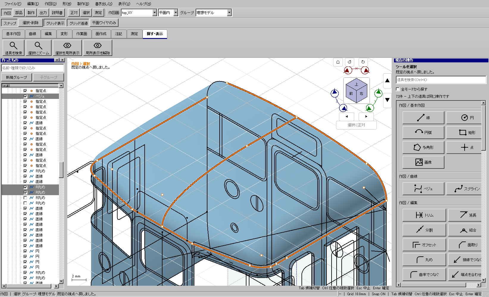

Windows全体・配布物検証済み。上面の厚み付けは別件として未解決。
面を1枚取り消す場合も、従来は全ての面と立体を捨てて再計算していた。面の再生成が長時間待ちになり、無関係な形が再計算に失敗すると表示から消える経路だった。
既存の厳格な履歴差分判定に、面の追加・削除を加えた。共通の入力・定義・精度が一致する場合だけ、変更していないnative形状とその辺の識別情報を保持する。入力が変わった場合や不明な状態は従来どおり再計算する。履歴を動かす前に下見を終了し、消えた形のうち他から参照されないnativeだけを解放する。
添付のコピー（revision953、393 features）を開き、左一覧から元の線を複数選択し、「面にする」→確定→保存→実Ctrl+Z→同じ線を選び直して確定→実Ctrl+Z/Y→保存を実行した。元のファイルへ保存していない。
| 操作・照合 | 変更前 | 変更後 |
|---|---|---|
| 面1枚のUndo | 63.402秒 | 0.473秒／0.457秒 |
| 同じ線から再生成 | 一連の試験が180秒で時間切れ | 下見28.248秒の後、確定・保存まで成功 |
| Redo | 未完了 | 10.159秒で復元 |
| 元の可視12形状 | 比較証拠なし | 生成・Undo・再生成・再Undo・Redoの全段階で、形状ID、三角形数、表示メッシュSHA256が一致 |
| 元393 features | 原本を保全 | 全定義とIDが保存データでも一致 |
同じPC・同じ添付コピーによる個測。全処理が同じ割合で高速化したという意味ではない。変更前の「無限ループ」は断定せず、長い全体再計算と時間切れを再現した。

実マウスで円を2個描いて穴付き面を作り、無関係な立体と面を残したまま実Ctrl+Z/Yを反復。同入力からの再生成、Redo分岐、下見中Undo、保存再読込を確認した。穴の面積、保持した面の辺ID、native所有数と再割当ての有無も照合。元の線を数値編集した場合は再計算し、元の体積へ正しく戻ることも確認した。
履歴重点3件、面生成重点19件、添付操作7件が成功。下見の計算をUndoの再割当て計測へ混入させていた試験の不合格と、その待機順を修正した結果も保全している。事前検査は不足していたQt include 2件を検出し、修正後9件が成功。
b2025a11bを事前9件、全体CTest197件（skip0）、開発/配布UI各735件、従来版の自己試験で検証。配布した実行ファイルの通常Windows起動も2経路成功した。GitHub更新2の対象コミット、最新タグ、ZIPサイズ76,113,267 bytesとSHA256がローカルの検証済みZIPに一致。
ZIP SHA256: 813913dc20f2d3c014a5e41aa75a8c08c1b62412deabe6ac045ba3e81d15ef69